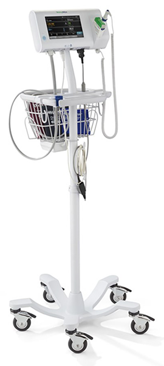

Monitor de signos vitales 
Modelo Welch Allyn Connex® Spot

DESCRIPCIÓN:
Monitor de signos vitales puntuales de rutina (rondas) fácil de usar, liviano y compacto.
Monitoreo por intervalos e índices de alerta temprana personalizados. Tecnologías Sure BP y Sure Temp Plus/Braun. Función de promedio de presión arterial, documentación completa en el punto del paciente e integración al Registro Médico Electrónico o EMR.
ESPECIFICACIONES TÉCNICAS:
La tecnología de medición rápida de la presión arterial no invasiva en sólo 15 segundos SureBP® mide la presión durante la insuflación. Frecuencia de pulso y presión arterial media (PAM) incluidas. Captura los índices de alerta temprana desde la cabecera del paciente. Pantalla táctil configurable y fácil de usar. Con tecnología WhisperDrive™ que ofrece una maniobrabilidad silenciosa para minimizar molestias al paciente. Presión arterial no invasiva, con tecnología.
DATOS COMPLEMENTARIOS: Si desea obtener más información, favor de contactar a:
ECOMED, S.A. DE C.V.
Tels.: CDMX: (55) 5698-6747, 7699-9948
Tel. Chihuahua (matriz): (614) 423-4500
Lada sin costo: 01 800-633-4225
e-mail: info@detecto.mx
www.ecomed.mx